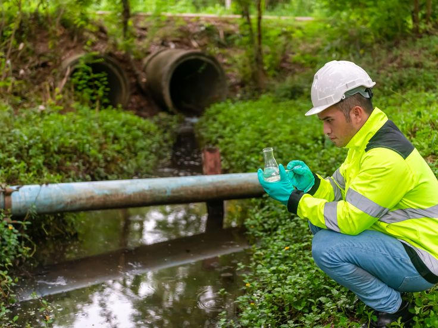
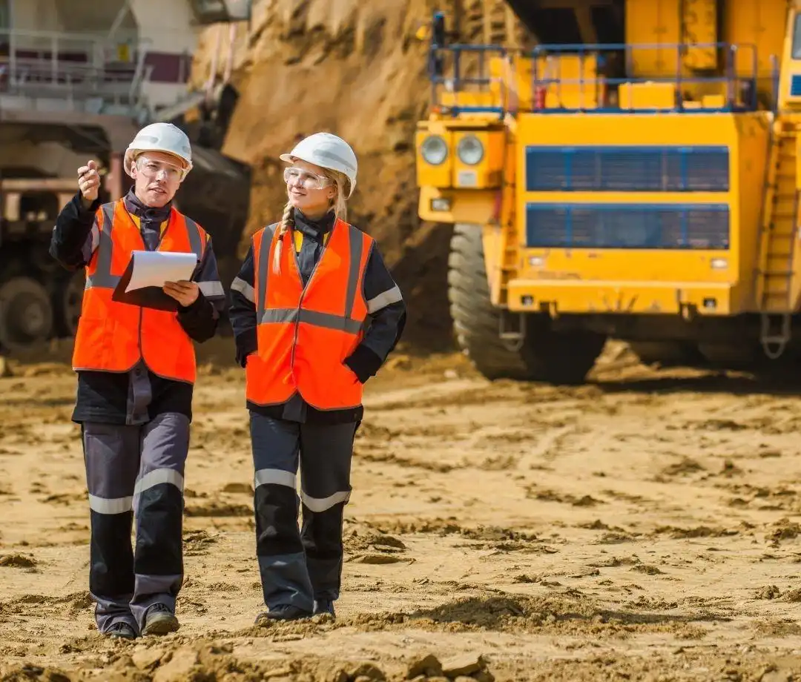
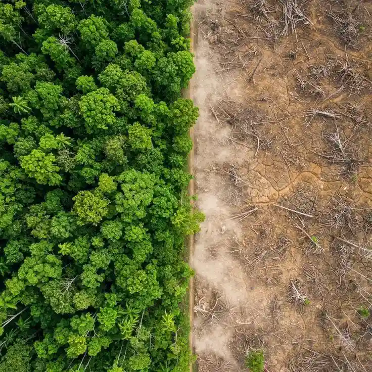

Galeri Kegiatan



Menghadirkan manfaat bagi masyarakat melalui pengelolaan sumber daya alam yang berkelanjutan dan ramah lingkungan.
Pelajari Lebih Lanjut
PT Pantang Mundur Indonesia merupakan perusahaan pertambangan yang berkomitmen menghadirkan nilai tambah bagi masyarakat melalui pengelolaan sumber daya alam yang profesional, transparan, dan berkelanjutan.
Kami percaya bahwa kegiatan pertambangan dapat berjalan seiring dengan pelestarian lingkungan serta peningkatan kesejahteraan masyarakat.
Menjadi perusahaan pertambangan yang unggul, berkelanjutan, dan memberikan manfaat bagi masyarakat serta lingkungan.
Mengelola sumber daya alam secara bertanggung jawab, meningkatkan kesejahteraan masyarakat, and menjaga keberlanjutan lingkungan.
Memberikan dampak positif bagi pembangunan daerah dan peningkatan kualitas hidup masyarakat.
Mendukung pendidikan melalui beasiswa dan pembangunan fasilitas sekolah.
Membantu pembangunan fasilitas kesehatan dan layanan sosial masyarakat.
Membangun jalan dan fasilitas umum yang mendukung pertumbuhan ekonomi daerah.
Membuka kesempatan kerja dan meningkatkan keterampilan masyarakat lokal.

Kami menerapkan praktik pertambangan berkelanjutan dengan mengutamakan reklamasi lahan, penghijauan, dan pengelolaan limbah yang bertanggung jawab.
Tenaga Kerja
Program CSR
Reklamasi Berhasil (%)
Tahun Pengalaman
Mengenal lebih dekat bagaimana perusahaan menjalankan operasional secara profesional dan bertanggung jawab.
Melalui video dokumentasi ini, kami memperlihatkan komitmen nyata PT Pantang Mundur Indonesia dalam melakukan pemulihan ekosistem. Setiap jengkal lahan pascatambang kami kelola kembali secara terstruktur melalui penataan tanah penutup (topsoil) dan penanaman vegetasi alami.
Kami percaya bahwa keberhasilan industri pertambangan tidak hanya diukur dari hasil produksi, melainkan dari seberapa hijau lahan yang mampu kami kembalikan untuk masa depan generasi mendatang.

Tidak. Pertambangan modern menerapkan standar lingkungan yang ketat dan program reklamasi.
Menyediakan lapangan kerja, pendidikan, kesehatan, dan pembangunan infrastruktur.
PT Pantang Mundur Indonesia
Jakarta, Indonesia
info@pantangmundur.co.id
+62 812 3456 7890